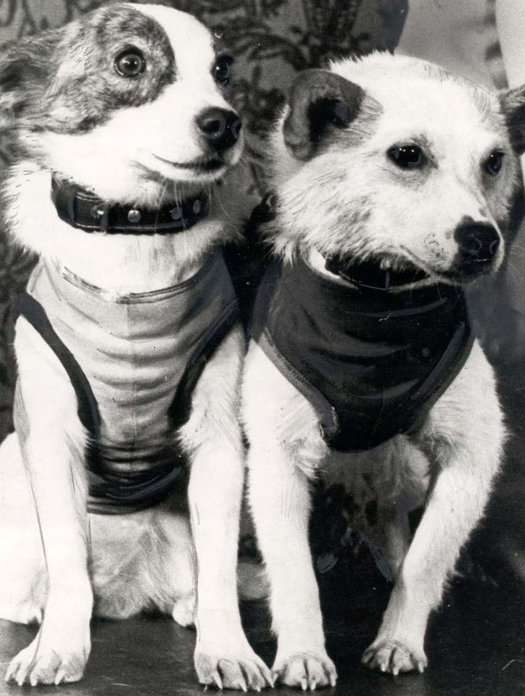
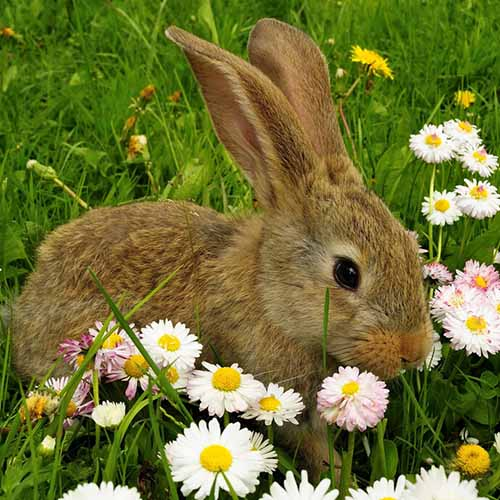
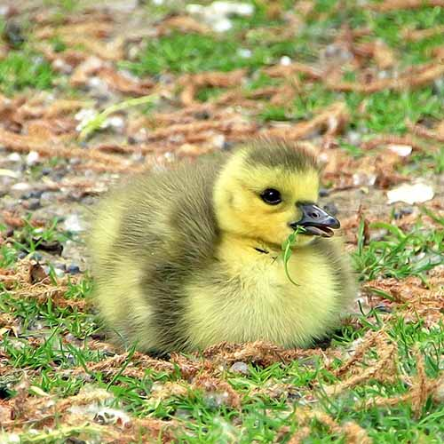
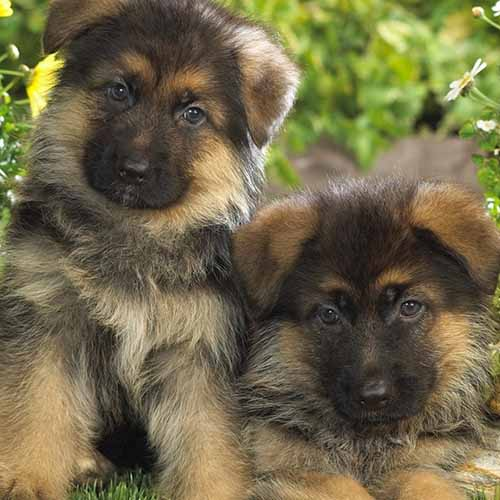
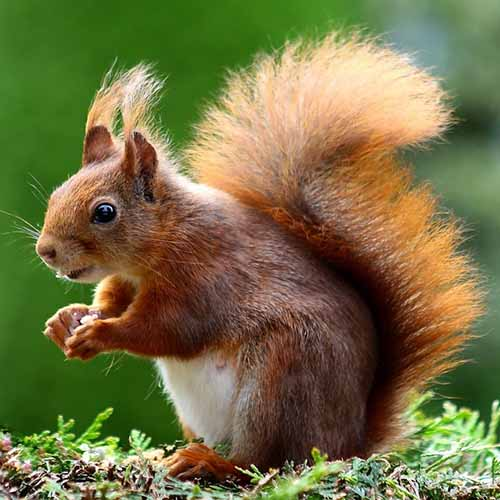

Белка и Стрелка
Основные критерии отбора были таковы: вес не более 6 кг, рост — до 35–37 см, возраст — от двух до пяти лет, наконец, светлый окрас, чтобы собак было лучше видно на мониторах.
Желательны были и симпатичные мордочки — ведь собакам в случае удачного полета предстояло стать почти кинозвездами.
19 августа 1960 года был осуществлен запуск космического корабля с собаками Белкой и Стрелкой на борту.
Это был первый орбитальный полет живых существ с успешным возвращением на Землю.
Какие животные первыми были в космосе?



